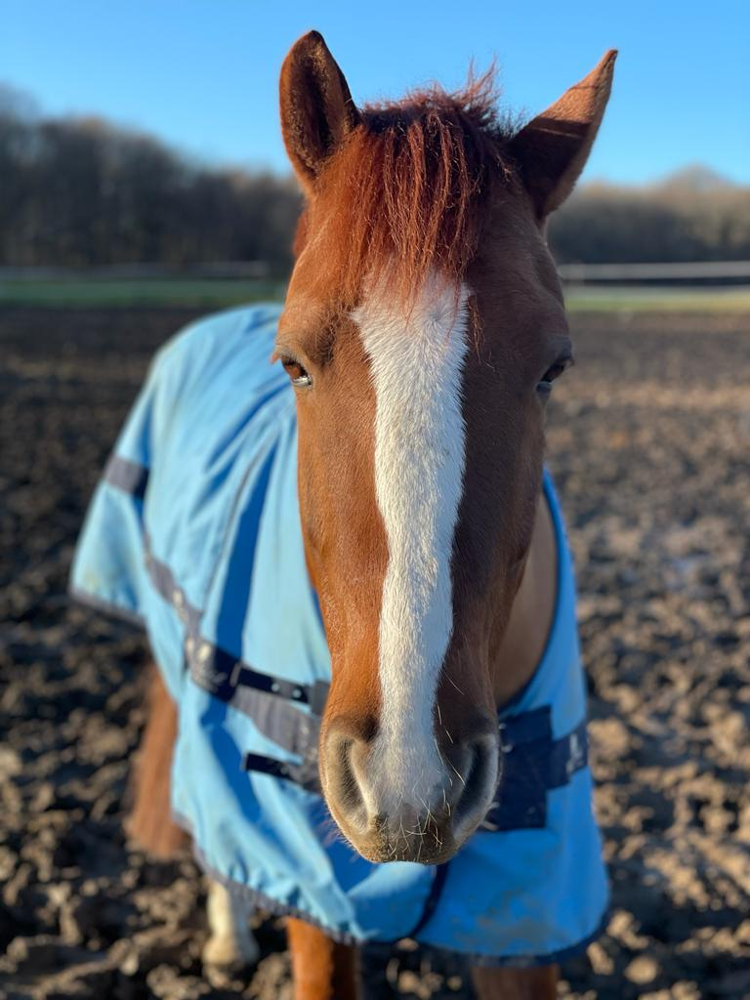

Islandshästen
På Island betraktas islandshästen med kärlek och vördnad då hästarna funnits på ön i över 1200 år.
En islandshäst som lämnat Island tillåts aldrig att återvända då risken är för stor att de blandats med andra raser samt att de bär på sjukdomar.
Hästarna på Island är nämligen sällan vaccinerade eftersom de är isolerade från sjukdomar som är vanliga i övriga världen.
Därför är islandshästen en av de renrasigaste hästarna i världen och de har varit fria från inblandning av andra hästar i över 800 år.
Islandshästen är idag den tredje populäraste hästrasen i Sverige. Det hästen används mest till i Sverige är fritidsridning, turridning och tävlingar.
Men även som "vanliga" hästar, träning inför tävling. Det finns många sorters av islandshäst tävlingar. Tävlingarna heter olika namn oftas en stor bokstav och en siffra.
Tex, "T8" där man visar tölt på ett visst sätt. Eller "V5" en lätt variation av fyrgång. Men självklart finns det många fler olika grenar.
På tävlingsbanan rider man flera ekipage på banan samtidigt med varsin färgbindel på antingen runt stöveln, hjälmen eller armen.
Man rider på en ovalbana och varje domarbås ligger parallellt bredvid varandra på ridbanan i mitten. Man visar upp de olika momenten på speakerns kommando.
Efter varje moment av grenen får varje ekipage varsina poäng av varje domare. Då säger högtalaren ungefär såhär: "Maja som rider med röda markeringar,
domare nummer 1, - poäng, domare nummer 2, - poäng osv osv. Det skiljer sig beroende på tävling hur många domarbås det finns. Efter varje moment är slut så sammanställs poängen efter de olika delpoängen under tävlingen.
Ett antal, tex de fem som kom på 1, 2, 3, 4, 5 plats går vidare till en A final och tävlar om segern. Det kan vara dagen efter eller på samma dag, det beror på. Men sedan de 5 ekipagen efter den 5:e placeringen,
alltså 5 an 6an 7an 8an 9an och 10an går vidare till en B final där vinnaren i B finalen går vidare till A finalen. Där gör de upp om segern och vinnaren utses.